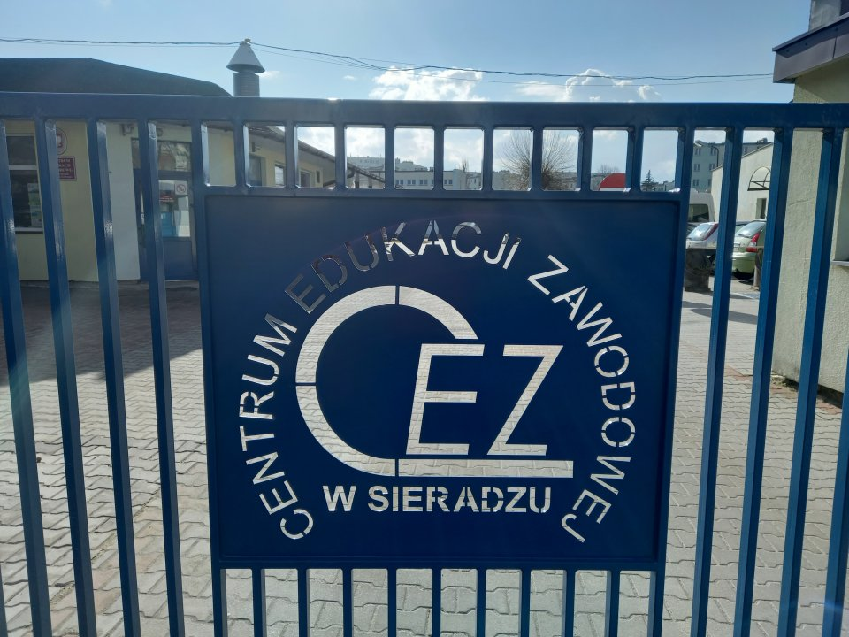

Informacje
Centrum Edukacji Zawodowej w Sieradzu to Zespół Publicznych Placówek Oświatowych prowadzony przez Starostwo Powiatowe w Sieradzu pod nadzorem Łódzkiego Kuratora Oświaty. CEZ rozpoczął swoją działalność w 1997 roku pod nazwą Centrum Kształcenia Praktycznego jako jedna z szesnastu nowo powstałych w kraju placówek oświatowych powołanych do wspomagania kształcenia zawodowego. Centrum Edukacji Zawodowej to profesjonalna i uznana placówka, która organizuje zajęcia praktyczne, praktyczną naukę zawodu, zajęcia teoretyczne i specjalizujące dla uczniów szkół ponadgimnazjalnych powiatu sieradzkiego oraz kursy z teoretycznych przedmiotów zawodowych dla uczniów szkół województwa łódzkiego. Ponadto Centrum Edukacji Zawodowej organizuje kursy zawodowe dla dorosłych, prowadzi działalność usługową z zakresu napraw samochodów, obróbki skrawaniem, budownictwa i inne. Galeria
Kontakt
Numer telefonu: 43 822 40 24Adres: 98-200 Sieradz, ul. Leszka Czarnego 2